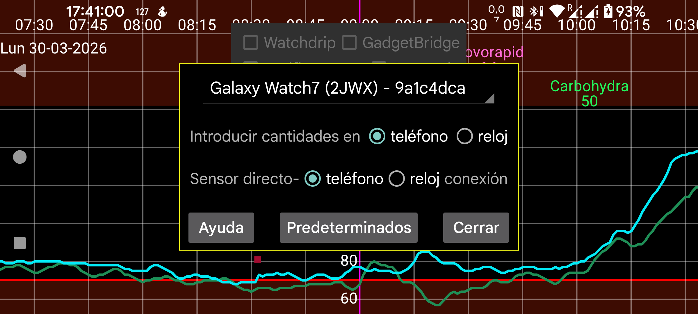

be de es fr it nl pl pt ru tr uk zh en
Introducir números (Cantidad) en el reloj: permite introducir en el reloj cantidades de insulina, carbohidratos y actividad, en lugar de hacerlo en el teléfono. Si quieres escanear NovoPens con el teléfono, no actives esta opción.
Si has olvidado el teléfono, puedes hacer lo mismo desde el reloj mediante menú izquierdo → Sensor → Cambiar.
Conexión directa sensor‑reloj: determina si el reloj debe conectarse directamente al sensor. Solo puede cambiarse cuando teléfono y reloj están sincronizados. Usa Clon → Sync y Reinit en ambos dispositivos para sincronizarlos.
Si olvidaste activar esta opción antes de salir solo con el reloj, puedes pulsar menú izquierdo → Sensor → Cambiar en el reloj para conectar el sensor directamente al reloj. Cuando el teléfono y el reloj vuelvan a quedar dentro del alcance Bluetooth, se enviará un mensaje al teléfono para que rompa su conexión con el sensor e invierta la dirección de la conexión clon.
Inicializar app del reloj: ya no hace falta pulsar este botón; ahora ocurre automáticamente.
Valores predeterminados: restablece los ajustes de conexión a sus valores por defecto. Incluye los ajustes que pueden modificarse en el menú izquierdo → Clon del reloj y en el menú central izquierdo → Clon del teléfono, por ejemplo Solo activo y Scans. Puede ser útil si esos valores se han cambiado por accidente. Si además reinstalas la versión del reloj o borras sus datos, también debes eliminar en el teléfono la conexión clon correspondiente.
Existe una versión especial de Juggluco para relojes Wear OS. Cada sensor debe inicializarse escaneándolo primero con Juggluco en el smartphone Android conectado. La información del sensor se envía luego al reloj mediante una conexión TCP.
Después hay dos posibilidades:
Se necesita un reloj Wear OS con Android 8 o superior. Para algunas imágenes, consulta https://www.juggluco.nl/JugglucoWearOS .
Para poner en marcha Juggluco en Wear OS:
Si el reloj tiene una conexión Bluetooth directa con el sensor y envía los valores al smartphone, también deben enviarse al reloj los valores escaneados. Esto se configura automáticamente si has seguido las instrucciones anteriores. Los valores de Stream deben haberse enviado al smartphone antes de escanear; de lo contrario podría devolverse información antigua al reloj o no enviarse la información de autenticación cambiada.
Los cambios en una conexión que ya funciona solo deberían hacerse cuando se hayan transferido todos los datos.
La conexión reloj‑teléfono es una adaptación de la conexión clon usada entre teléfonos o entre un teléfono y Juggluco-server. Tiene algunas particularidades:
Si no se intercambian datos entre el Juggluco del teléfono y el del reloj, comprueba lo siguiente:
Esfera: Juggluco para Wear OS incluye una esfera que muestra el valor actual de glucosa junto a la hora y hasta cuatro complicaciones. Normalmente verás los valores más recientes cuando se despierte la pantalla. En modo always on, la pantalla solo se actualiza una vez por minuto. Las esferas programadas de este tipo no pueden usarse en WearOS 5.
Complicaciones: desde Juggluco 8.2.0 hay complicaciones de valor de glucosa, flecha y valor+flecha que también pueden usarse en WearOS 5 con esferas que acepten complicaciones de imagen pequeñas o grandes.
Glucosa flotante: la mayor flexibilidad la ofrece la opción Glucosa flotante en el teléfono. Muestra el valor de glucosa por encima de cualquier esfera u otra pantalla sin ocupar una ranura de complicación.
Para más información, en la versión de Juggluco para el teléfono, ve a menú izquierdo → Ajustes → Glucosa flotante → Ayuda.
Desde la app complementaria puedes volver a enviar los datos a otros dispositivos por internet, como se describe en menú central izquierdo→Clon. También es posible conectar el reloj directamente a un servidor en internet y desde ahí a un teléfono seguidor, como se describe en: https://www.juggluco.nl/Juggluco/cmdline/watch